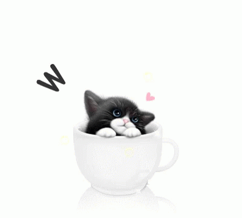

In our cat café MJAU you can enjoy your coffee while petting our lovely cats and listening to our wide collection of Estonian music. A tranquil coffee session here is a great way to take a break from your busy life and relieve stress. You are also able to adopt a cat from us, if you have good home to offer and a need for some feline company. Welcome!
